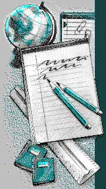

|
 |
 |
 |
| r1.gif 90x160 |
r2.gif 90x160 |
r3.gif 90x160 |
r4.gif 90x160 |
|---|
Лабораторные задания по курсу "Интернет-технологии"
Первая часть задания. Графика
Создать документ,
в котором в заголовке окна браузера должна быть надпись
"Лабораторная 3-1", а на экране используя таблицу собрать мозаику
из приведенных ниже элементов (они расположены в директории
RIS/LAB04):
r1.gif
90x160r2.gif
90x160r3.gif
90x160r4.gif
90x160
Обязательно сделать так, чтобы при наведении мышки на картинку, рядом с указателем мышки появлялось название файла.
Рамку вокруг таблицы не отрисовывать. Название таблицы: "МОЗАИКА" - расположить сверху по центру.
Для того, чтобы между картинками не было промежутков, в команде <TABLE> задайте атрибуты BORDER=0, CELLSPACING=0, CELLPADDING=0.

Используя описанные команды создать документ, в котором в заголовке окна браузера должна быть надпись "Лабораторная 3-2", а экран разделен на два фрейма:
Примечание
Для того, чтобы определить координаты элементов рисунка, нужно файл под названием
ris.bmp из директории RIS
открыть в графическом редакторе Paint и выбрать
инструмент "Карандаш". При движении курсором по рисунку, справа внизу
будут показываться X и Y координаты курсора в пикселях.
Используя описанные команды, создать документ,
в котором в заголовке окна браузера должна быть надпись "Лабораторная 3-3",
а экран содержал бы форму, включающую в себя следующие поля:
Типы и атрибуты команд выбираются, исходя из требуемого внешнего вида документа: